Cine ajunge
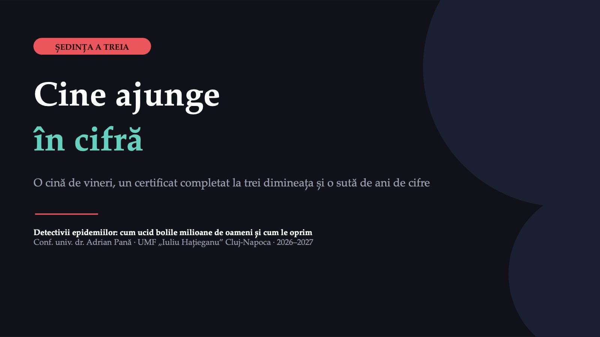
1 / 46Bine ați venit la ședința a treia, pe Teams. Azi urmărim trei povești și o singură întrebare: cine ajunge, de fapt, într-o cifră oficială despre o boală. Prima poveste este o cină de vineri cu colegii, a doua un certificat de deces completat la trei dimineața, a treia o sută de ani de cifre despre pandemii.
Ce am schimbat după răspunsurile voastre
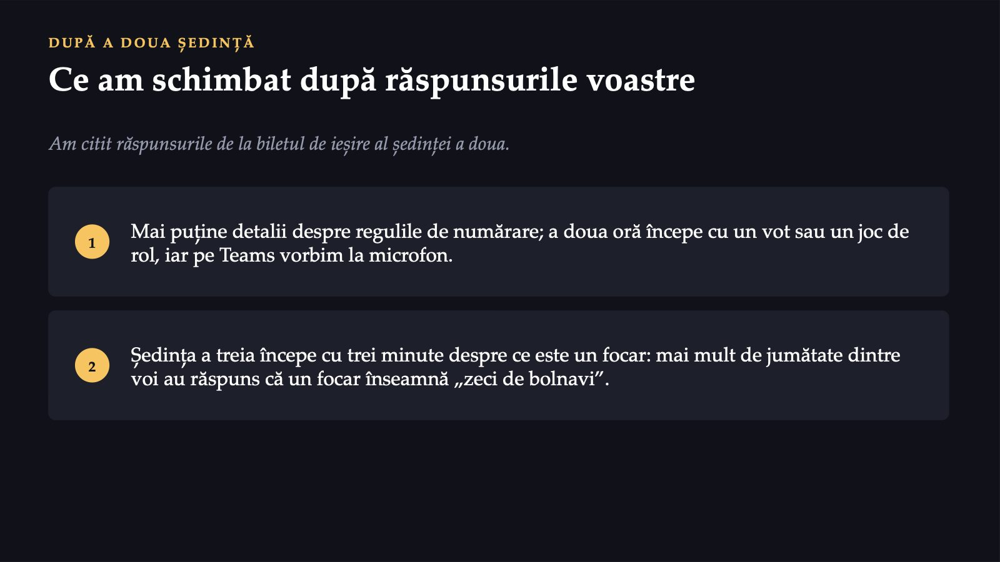
2 / 46Am citit răspunsurile voastre de la biletul de ieșire al ședinței a doua. Două lucruri se schimbă de azi. Întâi, mai puține detalii despre regulile de numărare și mai mult lucru al vostru: a doua oră începe cu un vot, iar pe parcurs aveți un joc de rol și o dezbatere, la care vorbiți cu microfonul deschis în Teams. Apoi, începem cu câteva minute despre ce este un focar, pentru că mai mult de jumătate dintre voi ați răspuns că un focar înseamnă „zeci de bolnavi”. Merită lămurit de la început.
O colegă de cameră cu ochii galbeni: este un focar?
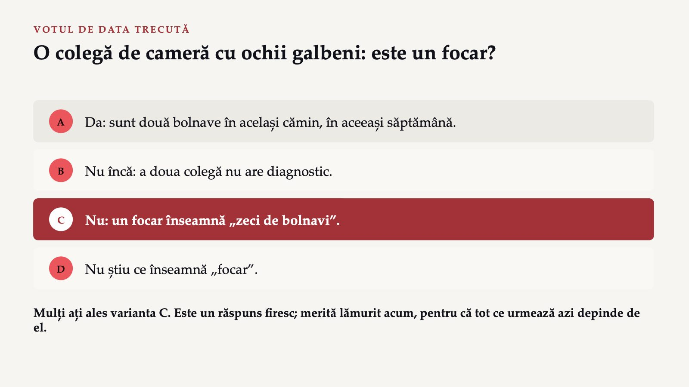
3 / 46Ședința trecută s-a încheiat cu această întrebare: o colegă de cameră cu ochii galbeni; este acesta un focar? Mulți dintre voi ați ales varianta C, „zeci de bolnavi”. Este un răspuns firesc și nu îl judecăm. Ne uităm, în schimb, la ce înseamnă, de fapt, cuvântul „focar”, pentru că tot ce urmează azi depinde de el.
Mai multe cazuri decât v-ați aștepta
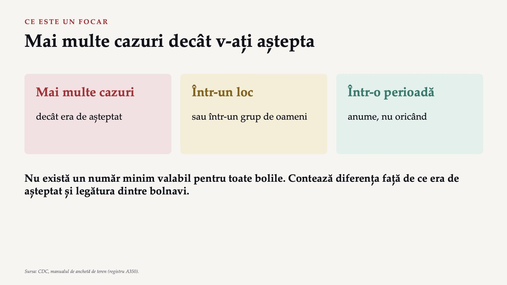
4 / 46Potrivit manualului de anchetă de teren al Centrelor pentru Controlul și Prevenirea Bolilor (CDC) din Statele Unite, focarul înseamnă mai multe cazuri de boală decât v-ați aștepta, într-un anumit loc sau grup de oameni și într-o anumită perioadă. Definiția are trei părți și niciuna nu este un număr. Nu există un număr minim valabil pentru toate bolile. Contează două lucruri: diferența față de ce era de așteptat și legătura dintre bolnavi. Câte cazuri sunt necesare spune regula fiecărui raport; vedem una imediat.
2
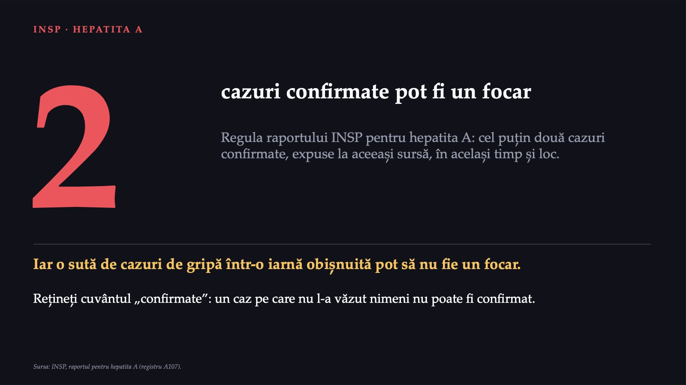
5 / 46Pentru hepatita A, raportul Institutului Național de Sănătate Publică (INSP) consideră focar apariția a cel puțin 2 cazuri confirmate, expuse la aceeași sursă, în același timp și loc. Două cazuri pot fi deci un focar, iar o sută de cazuri de gripă într-o iarnă obișnuită pot să nu fie. Ce contează este diferența față de ce era de așteptat. Rețineți un cuvânt din regulă: „confirmate”. Un caz pe care nu l-a văzut nimeni nu poate fi confirmat. Azi urmărim tocmai această întrebare: cine ajunge să fie văzut, confirmat și numărat?
Cine trebuia să fie văzut, și de către cine, ca să intre în cifră?
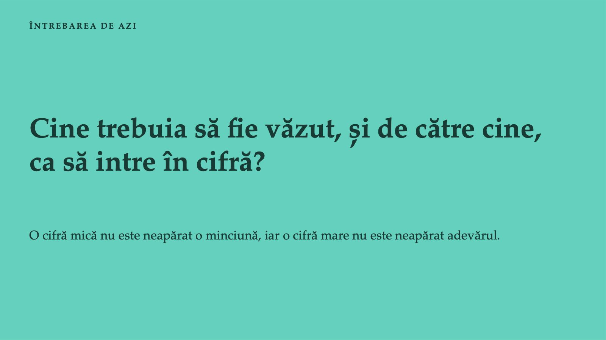
6 / 46Aceasta este întrebarea de azi: cine trebuia să fie văzut, și de către cine, ca să intre în cifră? O cifră mică nu este neapărat o minciună, iar o cifră mare nu este neapărat adevărul. O vom pune la o cină cu colegii, la un certificat de deces și la pandemiile ultimei sute de ani.
Grupul anului
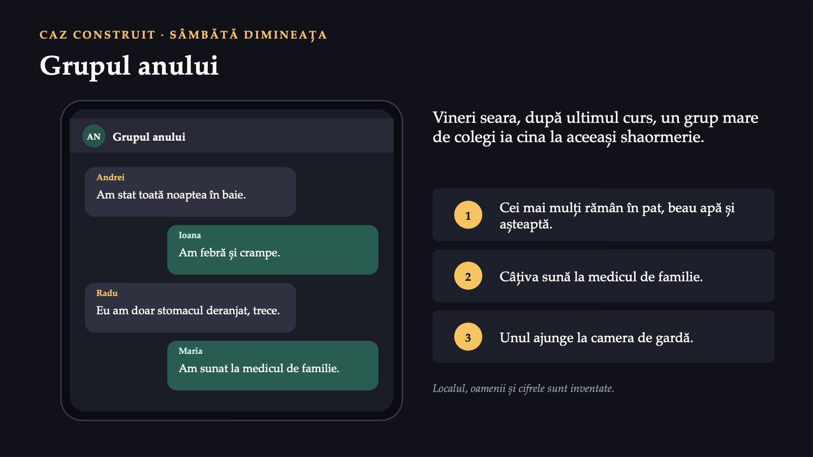
7 / 46Începem cu un caz construit, pentru exercițiu: localul, oamenii și cifrele sunt inventate. Vineri seara, după ultimul curs, un grup mare de colegi din anul vostru ia cina la aceeași shaormerie. Sâmbătă dimineața, grupul anului se umple de mesaje: „Am stat toată noaptea în baie”, „Am febră și crampe”, „Eu am doar stomacul deranjat, trece”. Cei mai mulți rămân în pat, beau apă și așteaptă. Câțiva sună la medicul de familie. Unul ajunge la camera de gardă, pentru că nu se mai poate ridica din pat. Urmează întrebarea care dintre ei va fi numărat.
Câți vor apărea în statistica oficială?
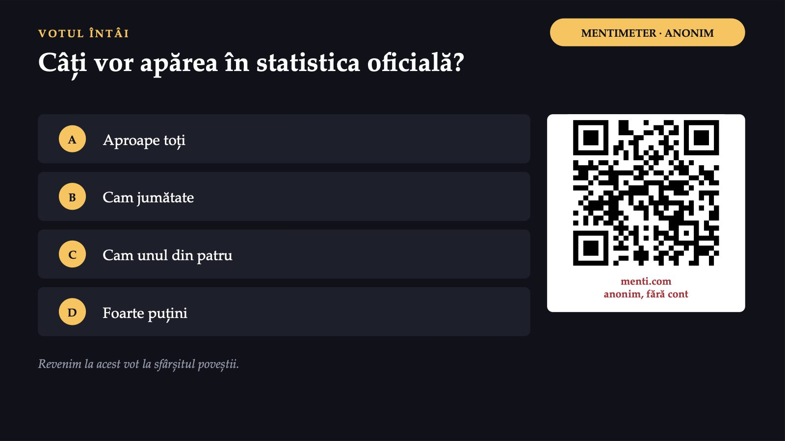
8 / 46Primul vot, anonim, pe Mentimeter; linkul este și în chat. Din toți colegii care s-au îmbolnăvit vineri seara, câți credeți că vor apărea, peste câteva săptămâni, în statistica oficială a bolilor transmisibile? Votați după intuiție. Revenim la acest vot la sfârșitul poveștii, după ce urmărim drumul fiecărui bolnav.
Telefonul la medicul de familie
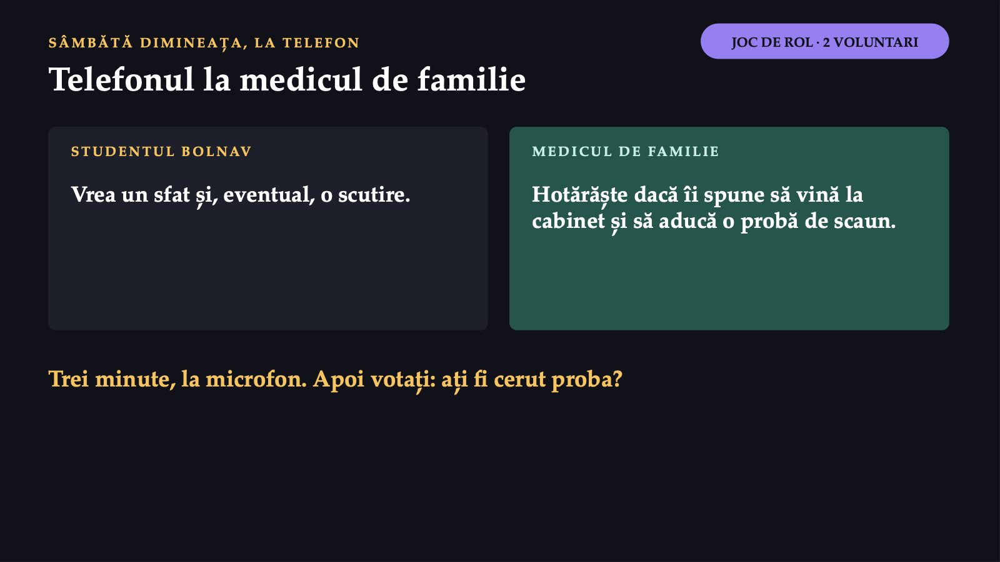
9 / 46Urmează o scenă jucată de doi voluntari, care se anunță cu reacția „mână ridicată” din Teams. Unul este un student bolnav de sâmbătă dimineața, celălalt este medicul lui de familie, la telefon. Vorbiți cu microfonul deschis și, dacă doriți, cu camera pornită. Studentul vrea un sfat și, eventual, o scutire. Medicul trebuie să hotărască dacă îi spune să vină la cabinet și să aducă o probă de scaun. Ceilalți dintre voi urmăriți decizia medicului și ce a dus la ea. După scenă, votează fiecare, ca și cum ar fi fost el medicul.
Ați fi cerut proba de scaun?
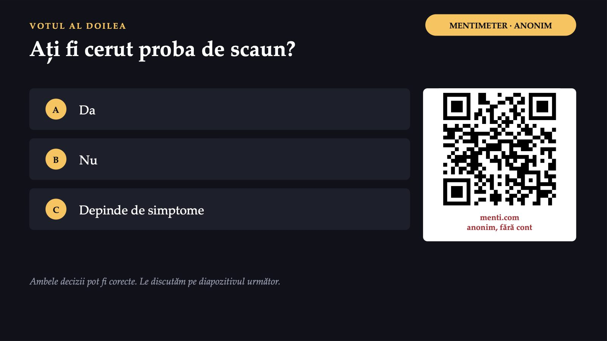
10 / 46Al doilea vot, anonim, pe Mentimeter, cu linkul și în chat. Ați fi cerut proba de scaun, ca medicul din scenă? Este un vot de opinie: ambele decizii pot fi corecte, după simptome. Imediat vedem ce recomandă ghidul și ce consecință are fiecare decizie pentru statistică.
Majoritatea diareilor trec singure
 11 / 46
11 / 46Ce s-a întâmplat în scenă se întâmplă în fiecare zi, în toată țara. Majoritatea diareilor infecțioase trec singure, iar pentru bolnavul obișnuit aflarea microbului contează adesea puțin. Ghidul Societății Americane de Boli Infecțioase (IDSA) recomandă proba de scaun mai ales când diareea vine cu febră, cu sânge sau mucus în scaun, cu crampe abdominale puternice ori cu semne de sepsis. Un medic care nu cere analize oricui are stomacul deranjat urmează deci ghidul. Decizia are însă o consecință statistică: un bolnav fără probă de laborator nu poate deveni un caz confirmat. Să vedem ce înseamnă asta pentru tot grupul.
Drumul celor douăzeci și doi de bolnavi
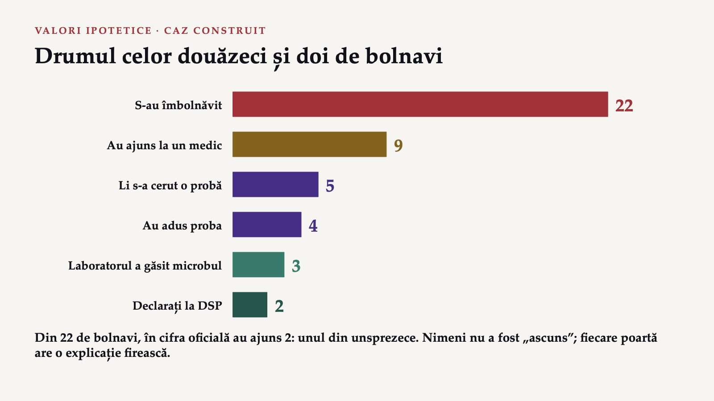
12 / 46Valorile sunt ipotetice. La shaormerie au mâncat 40 de colegi, iar 22 s-au îmbolnăvit. Din cei 22, 13 au rămas acasă și nu au vorbit cu niciun medic. Ceilalți 9 au ajuns la un medic, la cabinet, la telefon sau la camera de gardă. Medicii le-au cerut o probă de scaun la 5 dintre ei, iar 4 au adus-o. Laboratorul a găsit microbul la 3. Două rezultate pozitive au fost declarate la direcția de sănătate publică (DSP); al treilea s-a pierdut între laborator, medic și fișa de declarare. În cifra oficială au ajuns 2, adică unul din unsprezece. Nimeni nu a fost „ascuns”; fiecare poartă are o explicație firească.
Piramida supravegherii
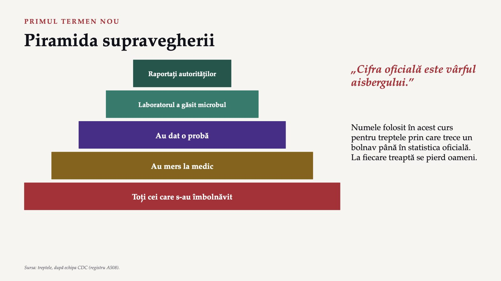
13 / 46Primul termen nou al ședinței: piramida supravegherii. Este numele folosit în acest curs pentru treptele prin care trece un bolnav până să ajungă în statistica oficială. La bază sunt toți cei care s-au îmbolnăvit; deasupra, cei care au mers la medic; apoi cei care au dat o probă; cei la care laboratorul a găsit microbul; în vârf, cei raportați autorităților. La fiecare treaptă se pierd oameni, fie pentru că nu au fost diagnosticați, fie pentru că, deși diagnosticați, nu au fost raportați. În cuvinte de zi cu zi: cifra oficială este vârful aisbergului.
Subdiagnosticarea și subraportarea
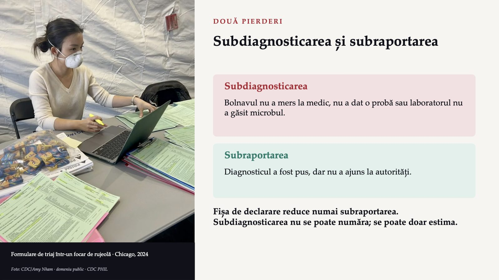
14 / 46Epidemiologii dau celor două pierderi nume diferite. Prima este subdiagnosticarea: bolnavul nu a mers la medic, nu a dat o probă sau laboratorul nu a căutat ori nu a găsit microbul. A doua este subraportarea: diagnosticul a fost pus, dar nu a ajuns la autorități. Deosebirea contează în practică. O fișă de declarare completată, trimisă și verificată reduce subraportarea, dar nu aduce în cifră pe cineva pe care nu l-a văzut niciun medic. Subdiagnosticarea nu se poate număra direct; se poate doar estima. În exemplul nostru, aproape toți bolnavii pierduți s-au pierdut prin subdiagnosticare și unul singur prin subraportare.
9,9 milioane
![NUMAI STATELE UNITE · 2019 9,9 milioane de îmbolnăviri dobândite în țară, produse de numai 6 microbi transmiși prin alimente (Salmonella, Campylobacter, norovirusul și alții) 53 300 de oameni trimiși la spital de aceiași microbi, plus Toxoplasma Baza piramidei nu se numără; se estimează, pornind de la cazurile confirmate și corectând pentru cei care nu au ajuns la medic, nu au dat probă sau nu au fost raportați. Pentru România nu avem o estimare verificată de acest fel. Sursa: estimarea coordonată de CDC pentru 2019 (registru A508, A509).](diapozitive/C03/015.jpg) 15 / 46
15 / 46Dacă vârful este atât de mic, de unde știm cât de mare este baza? Nu se poate număra direct; se poate estima. O echipă coordonată de CDC a pornit de la cazurile confirmate în laborator și a corectat, microb cu microb, pentru toți cei care nu au ajuns la medic, nu au dat probă sau nu au fost raportați. Rezultatul: în 2019, numai 6 microbi transmiși prin alimente, printre care Salmonella, Campylobacter și norovirusul, au produs în Statele Unite aproximativ 9,9 milioane de îmbolnăviri dobândite în țară. Împreună cu parazitul Toxoplasma, aceiași microbi au trimis la spital 53 300 de oameni. Cifrele sunt valabile numai pentru Statele Unite; pentru România nu avem o estimare la fel de recentă și verificată.
37%
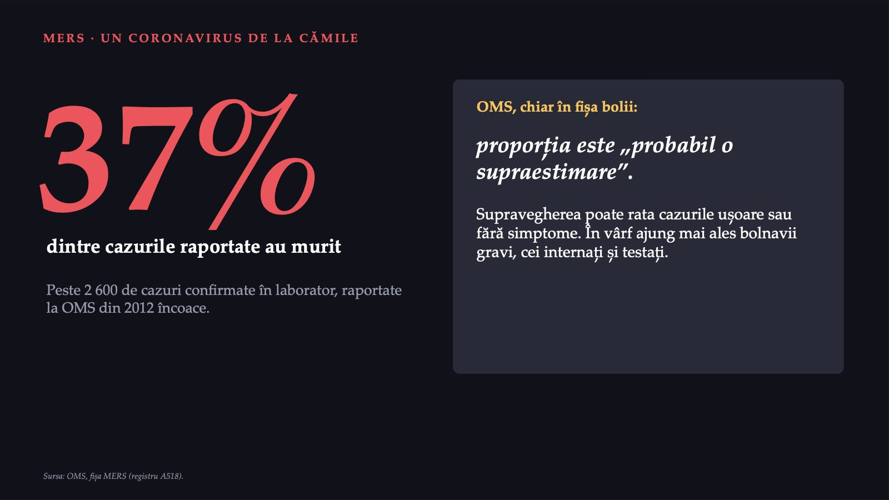
16 / 46Piramida nu micșorează doar numărul bolnavilor. Poate face o boală să pară mai gravă decât este. Exemplul cel mai clar este sindromul respirator din Orientul Mijlociu (MERS), produs de un coronavirus transmis de la cămile la om, identificat în 2012. De atunci, la Organizația Mondială a Sănătății (OMS) au fost raportate peste 2 600 de cazuri confirmate în laborator, majoritatea din Peninsula Arabică. Aproximativ 37% dintre cazurile raportate au murit. OMS adaugă însă, chiar în fișa bolii, că această proporție este probabil o supraestimare, pentru că supravegherea poate rata cazurile ușoare sau fără simptome. În vârf ajung mai ales bolnavii gravi, internați și testați.
Dacă s-ar testa toți cei cu răceală ușoară, proporția deceselor prin MERS ar…
17 / 46Imaginați-vă că mâine s-ar testa toți cei care au avut o răceală ușoară într-o regiune în care circulă MERS. Ce s-ar întâmpla cu proporția deceselor: ar crește, ar scădea sau ar rămâne la fel? Scrieți întâi în chat argumentul vostru, într-o frază, și citiți-l pe al unui coleg care gândește altfel. Apoi votați pe Mentimeter; linkul este și în chat.
Proporția ar scădea
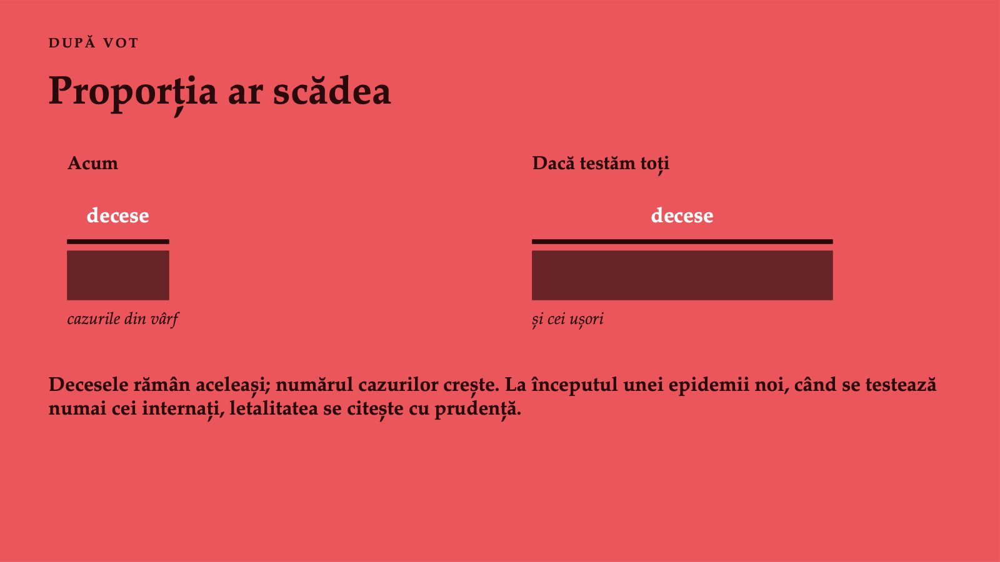
18 / 46Proporția ar scădea. Numărul deceselor ar rămâne același, dar numărul cazurilor ar crește, pentru că în număr ar intra și cei ușori. Când împărțiți decesele numai la cazurile din vârful piramidei, numitorul este prea mic, iar boala pare mai letală decât este. De aceea, o letalitate calculată la începutul unei epidemii noi, când se testează numai cei internați, trebuie citită cu prudență. Dacă în chat ați scris că decesele rămân aceleași, ați avut deja jumătate din explicație; cealaltă jumătate este numitorul.
În exemplul construit: foarte puțini
![ÎNAPOI LA VOTUL ÎNTÂI În exemplul construit: foarte puțini Doi din douăzeci și doi. Sistemul nu este neapărat rău: fiecare treaptă a piramidei filtrează. Cât de puțini ar fi într-un focar real nu se poate spune fără o anchetă. Ca studenți Când mai mulți colegi au aceleași simptome după o masă comună, spuneți-i medicului că nu sunteți singurul. Așa poate cere o probă. Ca viitori medici Analiza este o decizie clinică și poate fi „nu”. Fișa de declarare, la o boală cu declarare obligatorie, nu este o formalitate.](diapozitive/C03/019.jpg) 19 / 46
19 / 46Revenim la primul vot. În exemplul construit, varianta care se potrivește este „foarte puțini”: doi din douăzeci și doi. Sistemul nu este neapărat rău: fiecare treaptă a piramidei filtrează. Cât de puțini ar fi într-un focar real nu se poate spune fără o anchetă. Ca studenți: când mai mulți colegi au aceleași simptome după o masă comună, spuneți-i medicului că nu sunteți singurul; informația voastră îl poate face să ceară o probă, iar un focar pe care nu l-a văzut nimeni nu poate fi oprit la sursă. Ca viitori medici: analiza este o decizie clinică și poate fi, pe bună dreptate, „nu”; fișa de declarare, la o boală cu declarare obligatorie, nu este o formalitate.
Terapia intensivă, într-o noapte de noiembrie
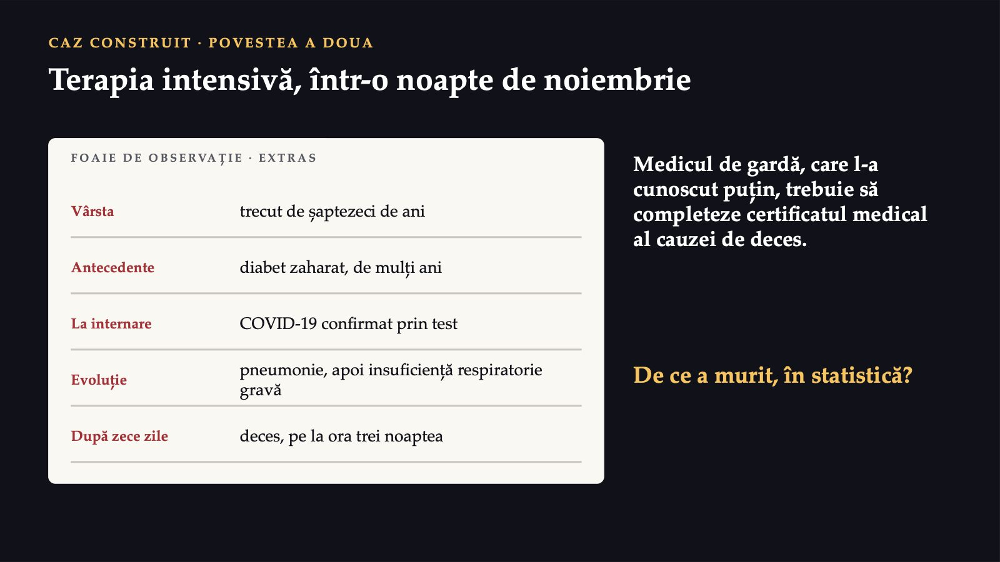
20 / 46A doua poveste, tot un caz construit. Un pacient trecut de șaptezeci de ani, cu diabet zaharat de mulți ani, este internat cu COVID-19 confirmat prin test. Face o pneumonie, apoi o insuficiență respiratorie gravă. După zece zile de terapie intensivă, moare într-o noapte de noiembrie, pe la ora trei. Medicul de gardă, care l-a cunoscut puțin, trebuie să completeze certificatul medical al cauzei de deces. Întrebarea acestei povești nu este de ce a murit pacientul, ci de ce a murit în statistică. Totul depinde de câteva rânduri scrise noaptea.
În care variantă intră pacientul în cifra deceselor prin COVID-19?
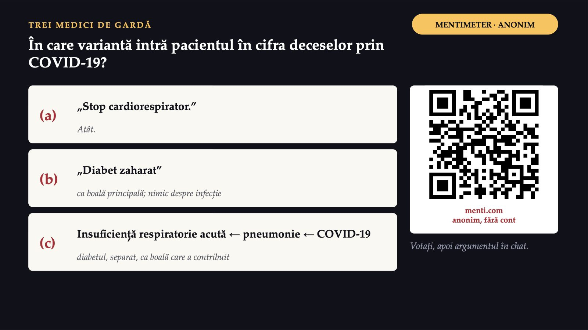
21 / 46Al patrulea vot, anonim, pe Mentimeter. Trei medici de gardă diferiți ar putea scrie trei certificate diferite pentru același pacient. În care variantă intră pacientul în cifra deceselor prin COVID-19? Votați întâi; apoi scrieți în chat, într-o frază, de ce ați ales varianta voastră, și citiți argumentele colegilor care au votat altfel.
Varianta (c)
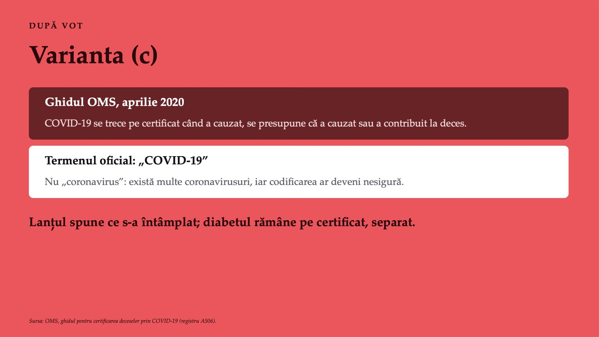
22 / 46Varianta (c). În aprilie 2020, OMS a publicat un ghid pentru medicii care completează certificatele: COVID-19 se trece pe certificat la toți decedații la care boala a cauzat, se presupune că a cauzat sau a contribuit la deces. Ghidul cere și termenul oficial, „COVID-19”, nu „coronavirus”, pentru că există multe coronavirusuri și codificarea ar deveni nesigură. Lanțul din varianta (c) spune ce s-a întâmplat, pas cu pas, iar diabetul rămâne pe certificat, separat, ca boală care a contribuit. Să vedem cum arată certificatul.
Lanțul, rând sub rând
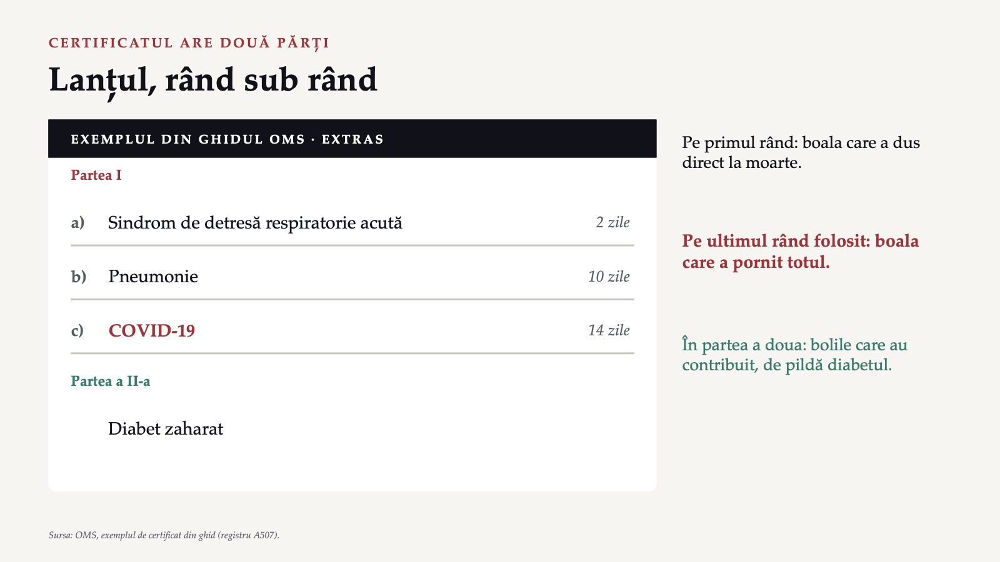
23 / 46Certificatul are două părți. În prima parte, medicul scrie, rând sub rând, lanțul de evenimente: pe primul rând, boala care a dus direct la moarte; pe rândurile de dedesubt, ce a produs-o; pe ultimul rând folosit, boala care a pornit totul. Exemplul din ghidul OMS arată exact ca pacientul nostru: sindrom de detresă respiratorie acută, de 2 zile, cauzat de o pneumonie, de 10 zile, cauzată de COVID-19, de 14 zile. În a doua parte se trec celelalte boli importante care au contribuit la deces, de pildă diabetul zaharat sau boala pulmonară obstructivă cronică.
„Boala de la care a pornit totul”
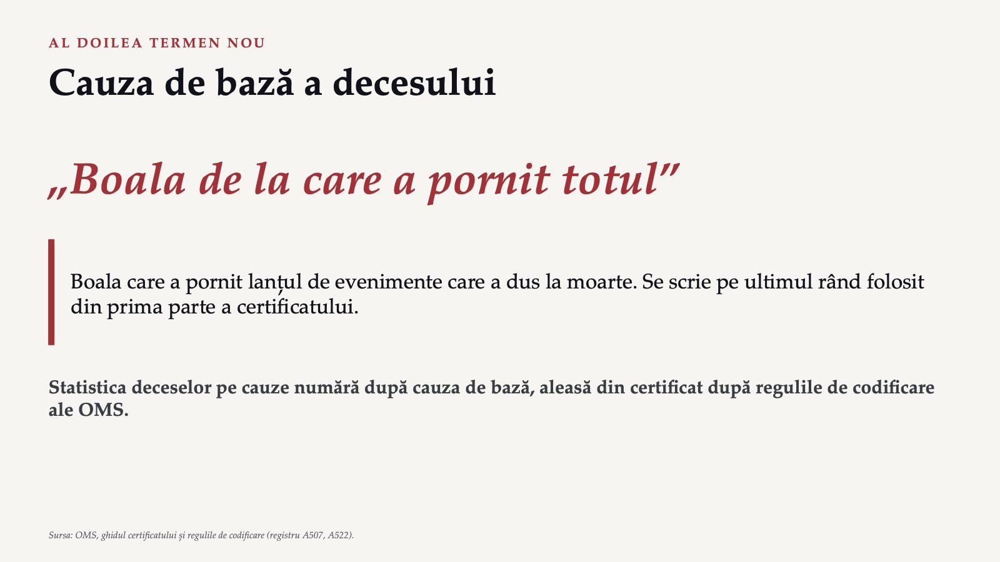
24 / 46Al doilea termen nou: cauza de bază a decesului. Este boala care a pornit lanțul de evenimente care a dus la moarte și se scrie pe ultimul rând folosit din prima parte a certificatului. În cuvinte de zi cu zi: boala de la care a pornit totul. Statistica deceselor pe cauze numără după cauza de bază, aleasă din certificat după regulile de codificare ale OMS. De aceea, pentru statistică, ultimul rând folosit hotărăște unde este numărat pacientul.
Trei certificate, trei statistici
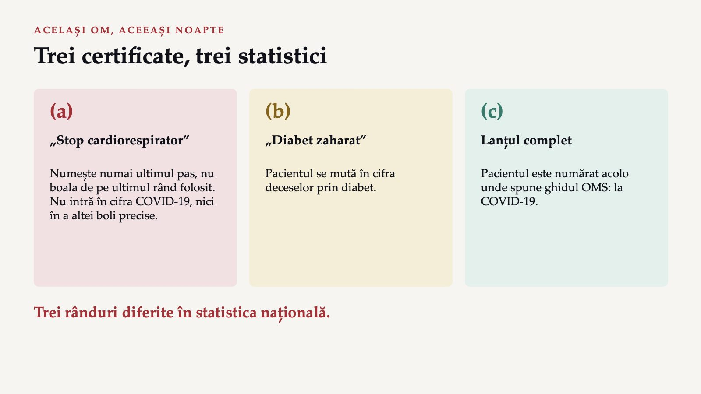
25 / 46Acum se vede de ce cele trei certificate dau trei statistici diferite. Varianta (a) numește numai ultimul pas, oprirea inimii și a respirației, și nu spune nimic despre boala care a pornit lanțul, adică tocmai ce cere ghidul OMS pe ultimul rând folosit. Pacientul nu ajunge în cifra COVID-19 și nici în cea a vreunei alte boli precise. Varianta (b) îl mută în cifra deceselor prin diabet. Abia varianta (c) îl numără acolo unde ghidul OMS spune că trebuie numărat. Același om, aceeași noapte, trei rânduri diferite în statistica națională.
Rescrieți varianta (a)
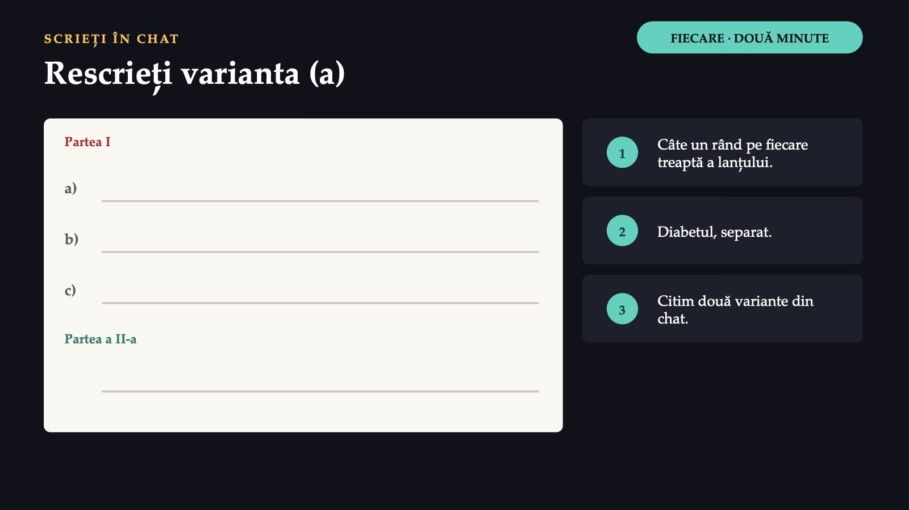
26 / 46Acum lucrați fiecare. Rescrieți varianta (a) astfel încât să respecte ghidul OMS: în prima parte, câte un rând pe fiecare treaptă a lanțului; în a doua parte, diabetul, separat. Scrieți certificatul în chat, cu literele rândurilor în față: a), b), c), apoi „Partea a II-a”. Citim împreună două variante din chat și vedem dacă ultimul rând folosit numește boala care a pornit totul.
Un deces care nu spune nimic nimănui
![CÂND CERTIFICATELE NU SPUN TOT Un deces care nu spune nimic nimănui Din certificate se face statistica deceselor pe cauze, iar din ea se decid programe, bugete și priorități. Chiar dacă fiecare medic ar completa perfect, unele decese tot nu ar fi atribuite bolii: Acasă, netestați Unii bolnavi mor fără să fi fost testați. Fără loc la timp Alții mor de un infarct sau de un accident vascular, pentru că, în plin val, nu au mai ajuns la timp la spital. Pentru ele există o a doua cale de a număra, care nu depinde de certificat.](diapozitive/C03/027.jpg) 27 / 46
27 / 46Certificatul nu este un document pentru arhivă. Din mii de certificate adunate se face statistica deceselor pe cauze, iar din ea se decid programe, bugete și priorități. Un certificat cu „stop cardiorespirator” pe singurul rând este un deces care nu spune nimic nimănui. Dar chiar dacă fiecare medic ar completa perfect, unele decese tot nu ar fi atribuite bolii. Unii bolnavi mor acasă, netestați. Alții mor pentru că, în plin val, nu au mai ajuns la timp la spital pentru un infarct sau un accident vascular. Pentru aceste situații, epidemiologii au o a doua cale de a număra, care nu depinde de ce scrie pe certificat.
Mortalitatea în exces
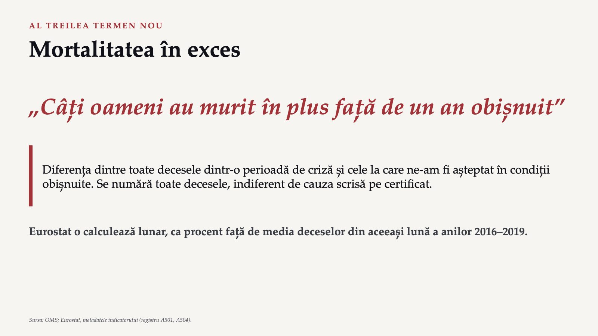
28 / 46Al treilea termen nou: mortalitatea în exces. Este diferența dintre numărul total de decese dintr-o perioadă de criză și numărul la care ne-am fi așteptat în condiții obișnuite. Se numără toate decesele, indiferent de cauza scrisă pe certificat. Oficiul de statistică al Uniunii Europene, Eurostat, o calculează lunar, ca procent față de media deceselor din aceeași lună a anilor 2016–2019. În cuvinte de zi cu zi: câți oameni au murit în plus față de un an obișnuit.
Avantajul și limita
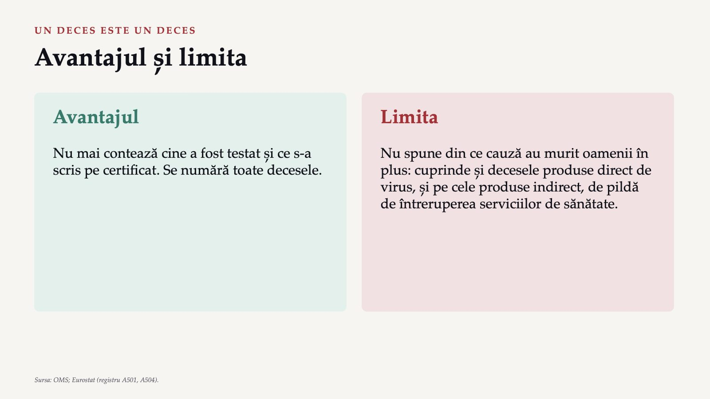
29 / 46Avantajul este limpede: nu mai contează cine a fost testat și ce s-a scris pe certificat. Un deces este un deces. Limita este la fel de importantă: mortalitatea în exces nu spune din ce cauză au murit oamenii în plus. Ea cuprinde și decesele produse direct de virus, și pe cele produse indirect, de pildă de întreruperea serviciilor de sănătate. Indicatorul răspunde deci la întrebarea „câți?”, nu la întrebarea „de ce?”. Pentru a doua întrebare este nevoie de certificate corecte și de studii speciale.
România: de aproximativ 2,1 ori mai multe decese
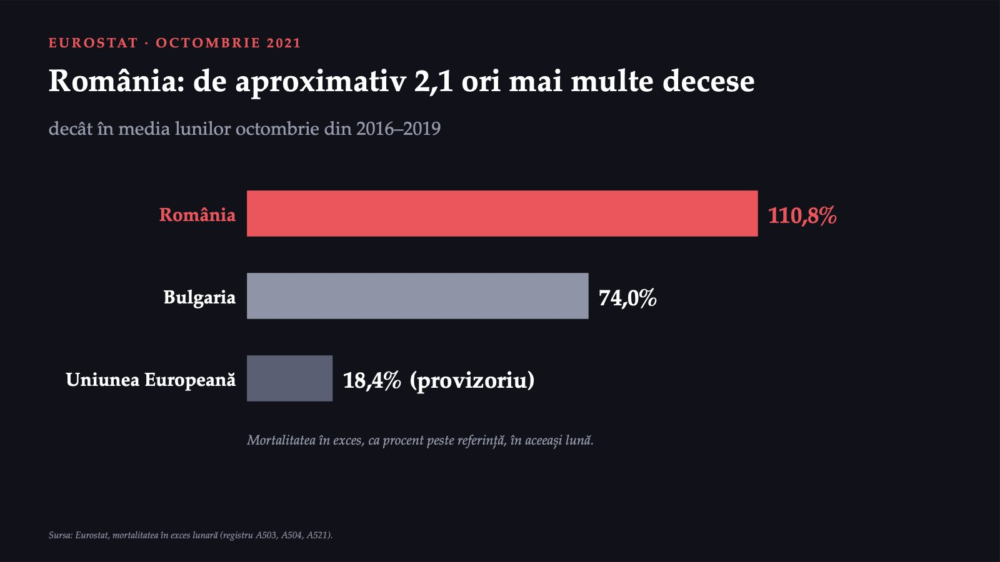
30 / 46Acum vă puteți uita cu alți ochi la o lună pe care unii dintre voi o țin minte. În octombrie 2021, potrivit Eurostat, mortalitatea în exces în România a fost de 110,8%. Adică în acea lună au murit de aproximativ 2,1 ori mai mulți oameni decât în media lunilor octombrie din 2016–2019. În aceeași lună, Bulgaria a avut 74,0%, iar media Uniunii Europene a fost de 18,4%, o valoare încă marcată de Eurostat ca provizorie. Cifra nu spune câte dintre aceste decese au fost produse de virus și câte de faptul că bolnavii cu alte boli nu au mai găsit loc sau ajutor la timp.
9,3%
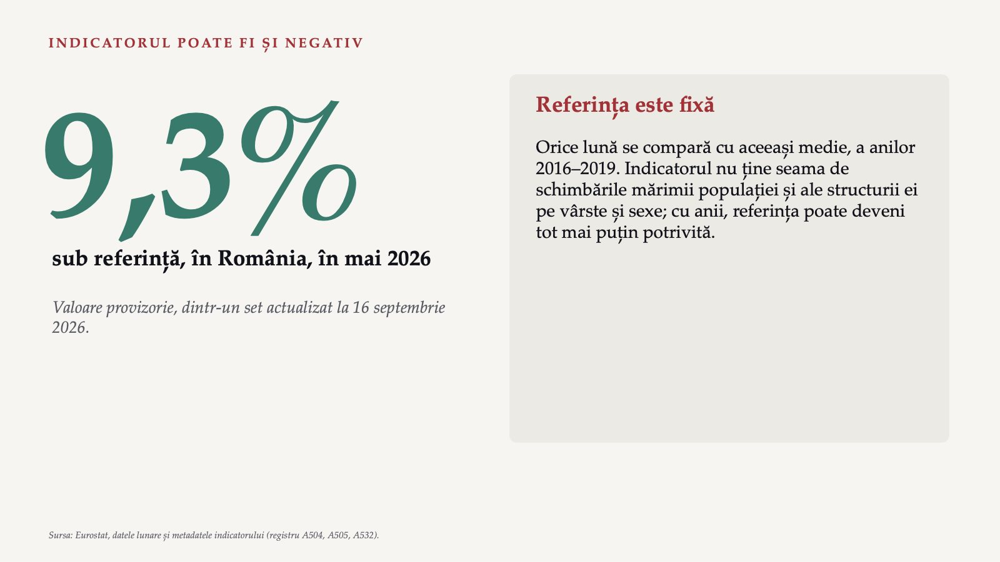
31 / 46Indicatorul poate fi și negativ. O valoare sub zero înseamnă că într-o lună au murit mai puțini oameni decât în perioada de referință. Pentru România, ultima lună cu valoare la data consultării era mai 2026: 9,3% sub referință, o valoare provizorie, dintr-un set actualizat la 16 septembrie 2026. Mortalitatea în exces nu vede, deci, numai epidemii; compară orice lună cu aceeași referință fixă, media anilor 2016–2019. Indicatorul nu ține seama de schimbările mărimii populației și ale structurii ei pe vârste și sexe; de aceea, cu anii, referința poate deveni tot mai puțin potrivită.
De 2,74 ori
 32 / 46
32 / 46Același calcul, făcut pentru toată lumea, dă cea mai importantă cifră a acestei ședințe. Pentru perioada ianuarie 2020 – decembrie 2021, OMS și colaboratorii ei au estimat 14,83 milioane de decese în exces la nivel mondial. În aceeași perioadă, țările raportaseră la OMS 5,42 milioane de decese prin COVID-19. Diferența este de 2,74 ori. Formulați cu grijă ce spune cifra: nu spune că toți aceștia au murit de COVID-19. O parte sunt decese prin virus care nu au ajuns în cifra raportată; o altă parte, decese produse de perturbările pandemiei. Distanța dintre cele două bare este, din nou, piramida.
Scrieți lanțul, nu doar ultimul pas
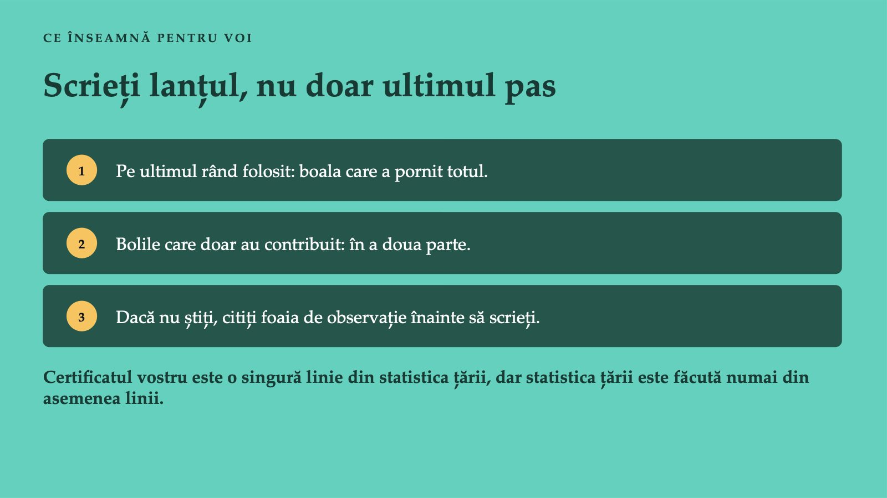
33 / 46Peste câțiva ani veți completa voi certificate de deces, adesea noaptea, adesea pentru pacienți pe care i-ați cunoscut puțin. Scrieți lanțul, nu doar ultimul pas. Pe ultimul rând folosit puneți boala care a pornit totul, iar bolile care doar au contribuit, în a doua parte. Dacă nu știți, citiți documentația medicală a pacientului înainte să scrieți. Certificatul vostru este o singură linie din statistica țării, dar statistica țării este făcută numai din asemenea linii. Cu aceasta se încheie prima oră; a doua începe cu un vot.
Câți oameni a ucis pandemia de gripă din 1918?
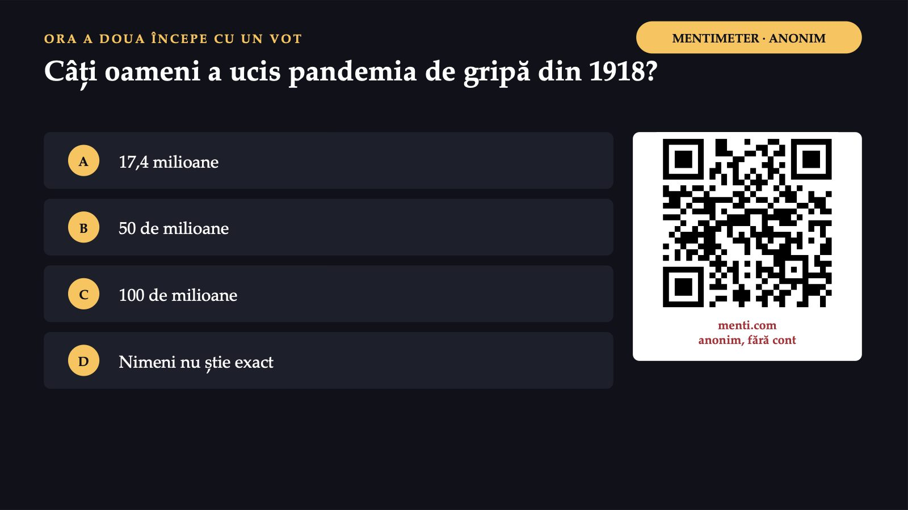
34 / 46Ora a doua începe cu un vot, anonim, pe Mentimeter; linkul este din nou în chat. Povestea a treia privește o sută de ani de cifre despre pandemii. Prima întrebare: câți oameni a ucis pandemia de gripă din 1918? Alegeți varianta care vi se pare cea mai apropiată de ce ați citit sau ați auzit.
Nimeni nu știe exact
![DUPĂ VOT Nimeni nu știe exact 2002 Johnson și Mueller 50–100 de milioane de decese; credeau că 50 de milioane este probabil o subestimare. 2018 O echipă olandeză 17,4 milioane, pentru 1918 și 1919; peste 25 de milioane li se pare foarte puțin probabil. În 1918, numai o parte a lumii avea statistici de mortalitate de încredere. Unde nu exista un registru, nu exista nici vârf de piramidă; rămân doar modele, iar modelele nu sunt de acord între ele. Surse: Johnson și Mueller, 2002; estimarea din 2018 (registru A514, A515, A516).](diapozitive/C03/035.jpg) 35 / 46
35 / 46Cine are dreptate? Varianta cinstită este ultima: nimeni nu știe exact. Poate ați auzit cifra de 50 de milioane. Ea are o istorie: în 2002, Johnson și Mueller au strâns statisticile disponibile și au propus un interval de 50–100 de milioane de decese, considerând că 50 de milioane este probabil o subestimare. În 2018, o echipă olandeză a refăcut calculul pe altă cale și a ajuns la 17,4 milioane, pentru anii 1918 și 1919; o cifră de peste 25 de milioane li se pare foarte puțin probabilă. În 1918, numai o parte a lumii avea statistici de mortalitate de încredere. Unde nu exista un registru, nu exista nici vârf de piramidă; rămân doar modelele, iar ele nu sunt de acord între ele.
2009 arată piramida foarte limpede
![DOUĂ PANDEMII PE CARE NU LE ȚINE MINTE NIMENI 2009 arată piramida foarte limpede 1957–1959: o reestimare atribuie pandemiei 1,1 milioane de decese în exces la nivel mondial. Confirmate în laborator 18 449 (până la 31 august 2010) Estimate (numai respiratorii, aprilie–decembrie 2009) 123 000 – 203 000 De circa 7–11 ori mai multe decese estimate decât confirmate (numai decese respiratorii; perioadele nu coincid). Cifra a părut mică; mulți s-au întrebat de ce fusese atâta agitație, unii dacă răspunsul fusese excesiv. Surse: OMS; estimările internaționale ale mortalității (registru A510, A511, A512, A513, A526).](diapozitive/C03/036.jpg) 36 / 46
36 / 46Au urmat alte pandemii de gripă. Pentru cea din 1957–1959, o reestimare atribuie pandemiei 1,1 milioane de decese în exces la nivel mondial. Pandemia din 2009 arată piramida foarte limpede. Până la 31 august 2010, OMS primise rapoarte despre 18 449 de decese confirmate în laborator. O echipă internațională a estimat însă, numai pentru aprilie–decembrie 2009, între 123 000 și 203 000 de decese respiratorii produse de gripa pandemică. Comparația este aproximativă, pentru că perioadele nu coincid și estimarea cuprinde numai decesele respiratorii; cu aceste rezerve, decesele estimate sunt de circa 7 până la 11 ori mai multe. Un deces devine confirmat în laborator numai dacă cineva a recoltat o probă și a testat-o. Este povestea cinei de vineri, la scara planetei.
8 096
![SARS · 2002–2003 Un contraexemplu posibil: SARS 8 096 cazuri probabile, în tabelul OMS 774 decese un caz în România, importat Ipoteza, neverificată: la o boală gravă și nouă, la care aproape toți bolnavii ajung la spital, baza piramidei ar fi îngustă. Tabelul OMS nu spune dacă așa a fost. Teza nu este „cifra raportată este întotdeauna prea mică”. Teza este o întrebare: cine trebuia să fie văzut, și de către cine? Sursa: OMS, tabelul cazurilor de SARS, debuturi între 1 noiembrie 2002 și 31 iulie 2003 (registru A077).](diapozitive/C03/037.jpg) 37 / 46
37 / 46Nu toate cifrele sunt neapărat atât de departe de realitate. Pentru sindromul respirator acut sever (SARS), boala respiratorie gravă din 2002–2003, OMS a publicat un tabel țară cu țară: 8 096 de cazuri probabile și 774 de decese, pentru debuturi între 1 noiembrie 2002 și 31 iulie 2003; România a avut un singur caz, importat. Ipoteza de verificat: la o boală gravă și nouă, la care aproape toți bolnavii ajung la spital, baza piramidei ar fi îngustă. Tabelul OMS nu spune dacă așa a fost. Teza ședinței nu este „cifra raportată este întotdeauna prea mică”; teza este o întrebare: cine trebuia să fie văzut, și de către cine?
„Răspunsul global la COVID-19 a fost mai bun decât cel la gripa spaniolă.”
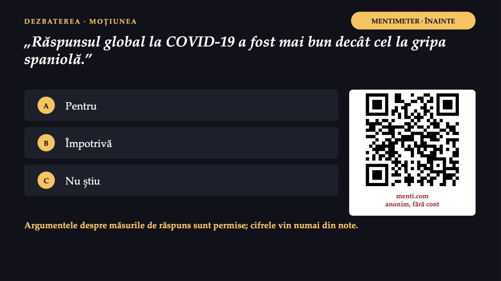
38 / 46Urmează o dezbatere. Moțiunea, preluată din fișa disciplinei: „Răspunsul global la COVID-19 a fost mai bun decât cel la gripa spaniolă”. Votați acum, anonim, pe Mentimeter, ce credeți: pentru, împotrivă sau nu știu. Argumentele despre măsurile de răspuns sunt permise; cifrele vin numai din notele cursului. După dezbatere, votați din nou.
Ian.–iun. pentru, iul.–dec. împotrivă
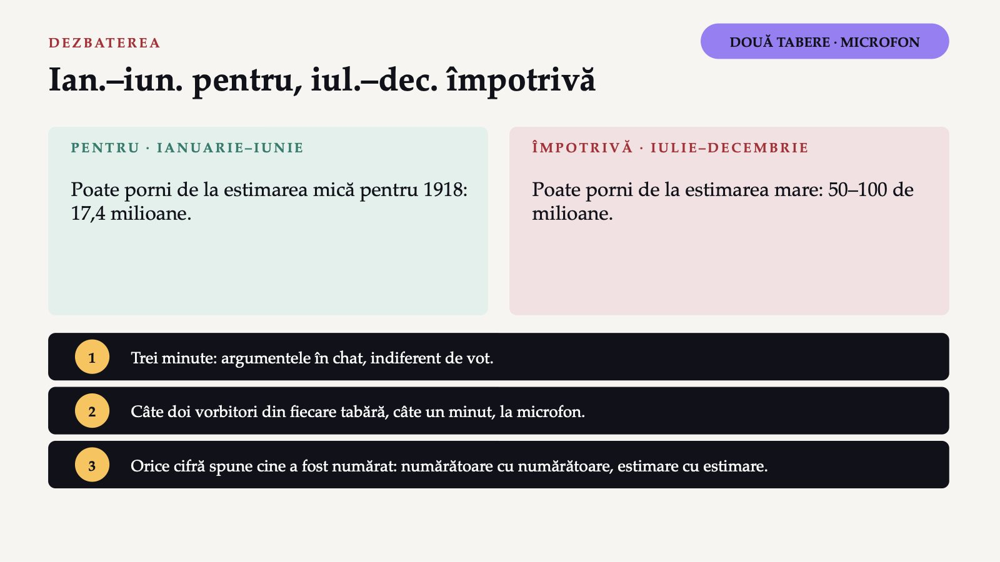
39 / 46Taberele se formează după luna nașterii: cei născuți între ianuarie și iunie susțin moțiunea, cei născuți între iulie și decembrie o combat, indiferent de votul fiecăruia. Scrieți argumentele în chat, cu numele taberei în față: „Pentru:” sau „Împotrivă:”. Apoi câte doi vorbitori din fiecare tabără, anunțați cu reacția „mână ridicată” din Teams, vorbesc pe rând, cu microfonul deschis. Tabăra care susține moțiunea poate porni de la estimarea mică pentru 1918, de 17,4 milioane; cealaltă, de la estimarea mare, de 50–100 de milioane. Veți descoperi repede că nu comparați lucruri de același fel: pentru 1918 există numai modele, iar pentru COVID-19, o numărătoare de 5,42 milioane și un model de 14,83 milioane. O comparație cinstită spune întâi ce compară.
Cât s-a mutat votul?
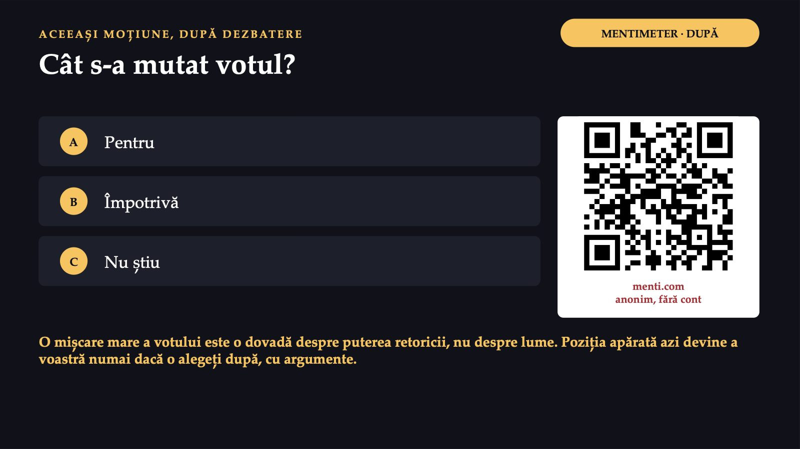
40 / 46Același vot, după argumente. Rezultatul nu vă spune care pandemie a fost tratată mai bine; vă spune cât de mult s-au mișcat opiniile. Pe o întrebare la care datele nu pot răspunde complet, o mișcare mare a votului este o dovadă despre puterea retoricii, nu despre lume. Poziția apărată azi devine a voastră numai dacă o alegeți după, cu argumente.
Urgența pandemică, adoptată în 2024
![O DEFINIȚIE DE CAZ PENTRU TOATĂ PLANETA Urgența pandemică, adoptată în 2024 O urgență de sănătate publică de importanță internațională, cauzată de o boală transmisibilă, devine urgență pandemică numai dacă îndeplinește toate patru condițiile: 1 Se răspândește larg, în și între mai multe state 2 Depășește capacitatea sistemelor de sănătate 3 Produce perturbări sociale sau economice substanțiale 4 Cere o acțiune internațională rapidă, echitabilă și coordonată Toate patru sunt obligatorii, dar fiecare poate fi îndeplinită și printr-un risc mare, nu numai printr-un fapt deja petrecut. Sursa: OMS, amendamentele la Regulamentul Sanitar Internațional, rezoluția WHA77.17 (registru A517).](diapozitive/C03/041.jpg) 41 / 46
41 / 46Ați văzut în ședința trecută că un focar are o definiție scrisă. Din 2024 există una și pentru cea mai gravă situație posibilă: urgența pandemică. Pe 1 iunie 2024, Adunarea Mondială a Sănătății a adoptat amendamente la Regulamentul Sanitar Internațional, iar unul dintre ele introduce această categorie. O urgență de sănătate publică de importanță internațională, cauzată de o boală transmisibilă, devine urgență pandemică numai dacă îndeplinește toate cele patru condiții de pe ecran. Toate sunt obligatorii, dar fiecare poate fi îndeplinită și printr-un risc mare, nu numai printr-un fapt deja petrecut. Este, literalmente, o definiție de caz: o regulă scrisă după care se hotărăște cine intră în categorie.
Ebola Bundibugyo, acum
![MENTIMETER · ANONIM RAPORTUL OMS DIN 8 OCTOMBRIE 2026 Ebola Bundibugyo, acum 8 728 cazuri confirmate 4 205 decese confirmate 48,2% letalitate brută Republica Democratică Congo, la 6 octombrie. Epidemia din Republica Democratică Congo și Uganda a fost declarată urgență de sănătate publică de importanță internațională. Câte dintre cele patru condiții ale urgenței pandemice vi se par îndeplinite? Niciuna · Una sau două · Trei · Toate patru Apoi un minut în chat: ce informație v-ar lipsi ca să decideți? Sursa: OMS, raportul despre focar din 8 octombrie 2026 și pagina focarului (registru A519, A520). menti.com anonim, fără cont](diapozitive/C03/042.jpg) 42 / 46
42 / 46Un caz de acum: epidemia de boală Ebola produsă de virusul Bundibugyo, din raportul OMS din 8 octombrie 2026. Citiți din nou cele patru condiții și cifrele din raport, apoi votați pe Mentimeter câte vi se par îndeplinite. Nu există o variantă fixată dinainte; fiecare decide singur. După vot, scrieți în chat ce informație v-ar lipsi ca să decideți.
„Confirmate”
![CUVÂNTUL CARE SE REPETĂ ÎN RAPORT „Confirmate” Letalitatea brută, de 48,2%, poate greși în ambele sensuri. Prea mare, ca la MERS, dacă cei gravi ajung mai des să fie testați. Sau prea mică: 4 205 muriseră 2 269 se vindecaseră 2 254 fără deznodământ raportat din cei 8 728 de confirmați Cei fără deznodământ sunt deja în numitor; cei care vor muri în zilele următoare nu sunt încă în numărător. Câți bolnavi a avut în realitate focarul nu se poate spune din raport. Sursa: OMS, raportul din 8 octombrie 2026 (registru A519, A527, A528).](diapozitive/C03/043.jpg) 43 / 46
43 / 46Observați întâi cuvântul care se repetă în raport: „confirmate”. Raportul numără cazurile și decesele confirmate în laborator; dacă unii bolnavi mor fără să fi fost testați, și aici cifra este vârful unei piramide. Letalitatea brută, de 48,2%, poate greși în ambele sensuri. Poate fi prea mare, ca la MERS, dacă cei gravi ajung mai des să fie testați. Poate fi însă și prea mică: din cei 8 728 de confirmați, 4 205 muriseră și 2 269 se vindecaseră, deci 2 254 nu aveau încă un deznodământ raportat. Ei sunt deja în numitor, dar cei care vor muri în zilele următoare nu sunt încă în numărător. Câți bolnavi a avut în realitate focarul nu se poate spune din raport.
Zece întrebări din poveștile de azi
44 / 46Recapitulăm cu Kahoot: zece întrebări despre cele trei povești de azi. Intrați pe kahoot.it cu codul jocului afișat pe ecran; îl găsiți și în chat. Rezultatul nu se notează. Arată ce s-a reținut din ședință, iar fiecare întrebare se discută imediat după vot.
Ce faceți diferit de mâine
 45 / 46
45 / 46Cinci lucruri pe care le puteți face diferit de mâine. Când citiți o cifră despre o boală, întrebați întâi: cine trebuia să fie văzut, și de către cine, ca să intre în ea? Când vă îmbolnăviți după o masă comună, spuneți-i medicului că mai sunt și alți colegi bolnavi; așa un focar nevăzut poate deveni vizibil. Când veți pune un diagnostic de boală cu declarare obligatorie, trimiteți fișa de declarare. Când veți completa un certificat de deces, scrieți lanțul întreg. Iar când vedeți două cifre diferite despre aceeași pandemie, nu întrebați „care e adevărată?”, ci „ce a numărat fiecare?”.
Biletul de ieșire
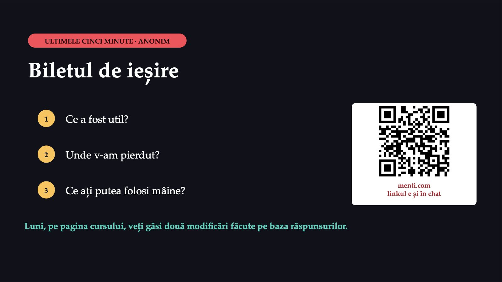
46 / 46Încheiem cu biletul de ieșire: trei întrebări anonime, pe Mentimeter; linkul este și în chat. Ce a fost util? Unde v-am pierdut? Ce ați putea folosi mâine? Răspunsurile voastre schimbă ședințele următoare. Luni veți găsi pe pagina cursului cele două modificări făcute după ele. Vă mulțumesc.
Săgeți sau spațiu: navigare · O: vedere de ansamblu · N: notele prezentatorului · F: ecran complet · Esc: închidere